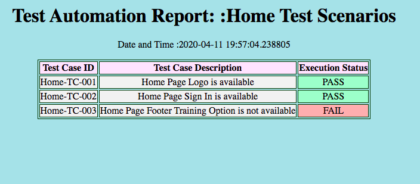

Package and Python File Creation Before Code Development
Creating 2 python packages TestScenarios and TestScenarioImplementation
Now Let's take an example of HomeTest.py which is an UnitTestClass where we are calling the primary scenarios. Scenario implementations are described in HomeTestDef.py file.
Below example shows how we are calling scenarios from HomeTest.py
# Developed By MITHUN ROY
# https://manual2Automation.com
import unittest
from pathlib import Path
from Reusable.reusable_methods import ReusableTest
from Reusable import Driver
from TestScenarioImplementation.HomeTestDef import HomeTestDef
class HomeTestClass(unittest.TestCase):
def setUp(self):
Driver.Initialize()
def test_scenarios_execution(self):
pro_path = Path(__file__).parent
x = str(pro_path).split("TestScenarios")[0] + str("TestReport/")
with open(x + 'HomeTestScenario.html', 'w') as html_file:
# Create initial test report
ReusableTest.initial_html(html_file, "Home Test Scenarios")
# Starting execution
HomeTestDef.go_to_url(ReusableTest.read_xml("applicationurl")) # Launch The Application
HomeTestDef.header_options_validation(self, html_file) # Do Header section validation
HomeTestDef.footer_options_validation(self, html_file) # Do Footer section validation
# Final report
ReusableTest.final_html(html_file)
def tearDown(self):
Driver.close_driver()
if __name__ == '__main__':
unittest.main()
from TestScenarioImplementation.HomeTestDef import HomeTestDef To import HomeTestDef class file. Here TestScenarioImplementation.HomeTestDef = Package name.className
Driver.Initialize() To Initialize Selenium WebDriver
html_file To declare customize HTML report name as per test scenario name.
ReusableTest.initial_html(html_file, "Home Test Scenarios") To Initialize customize HTML report name as per test scenario name.
Below example shows how implemented class file has calling scenario definitions, HomeTestDef.py
# Developed By MITHUN ROY
# https://manual2Automation.com
# use of class method and static method.
from Reusable import Driver
from PageObject.Home import HomePage
from Reusable.reusable_methods import ReusableTest
class HomeTestDef:
@staticmethod
def go_to_url(url):
Driver.Instance.maximize_window()
Driver.Instance.get(url)
@staticmethod
def header_options_validation(self, html_report):
try:
self.assertTrue(Driver.is_web_element_displayed(HomePage.applicationLogo()))
self.assertTrue(Driver.is_web_element_displayed(HomePage.loginLink()))
self.assertTrue(Driver.is_web_element_displayed(HomePage.training_option()))
Driver.click_and_implicit_wait(HomePage.loginLink())
Driver.go_back(5)
ReusableTest.when_test_is_pass(html_report, "Home-TC-001", "Home Page Logo is available")
ReusableTest.when_test_is_pass(html_report, "Home-TC-002", "Home Page Sign In is available")
except:
ReusableTest.when_test_is_fail(html_report, "Home-TC-001", "Home Page Logo is not available")
ReusableTest.when_test_is_fail(html_report, "Home-TC-002", "Home Page Sign In is not available")
@staticmethod
def footer_options_validation(self, htmlreport):
try:
self.assertEquals("Training Option", Driver.get_element_text(HomePage.training_option()))
ReusableTest.when_test_is_pass(htmlreport, "Home-TC-003", "Home Page Footer Training Option is available")
except:
ReusableTest.when_test_is_fail(htmlreport, "Home-TC-003", "Home Page Footer Training Option is not available")
After successful execution HTML Test report looks like below.
